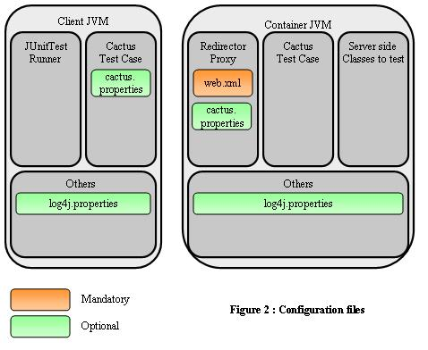

|
Last update : August 31 2002
Doc for : v1.4.1
About
What is Cactus ?
News
Changes
Features/Status
Goals
Roadmap/Todo
Contributors
Contributing
Cactus Users
Tested on ...
License
Downloads
Downloads
Documentation
How it works ?
Getting Started
Mock vs Container
Javadocs
FAQ
Howto Guides
Classpath Howto
Config Howto
Migration Howto
TestCase Howto
Jsp Howto
Runner Howto
Security Howto
Ant Howto
HttpUnit Howto
Sample Howto
EJB Howto
IDE Howto
Tomcat Howto
JUnitEE Howto
Support
Bug database
Mailing list
Misc.
Why the name ?
Logo Challenge
Resources
Test Coverage
Stats
Developers
CVS
Coding Conventions
Build results
Release Checklist
|
| Cactus Configuration |
Here are the configuration files used by Cactus:

There are 3 kinds of configuration:
Cactus configuration works by setting Java System properties. You can
set the Cactus configuration properties:
-
On the command line (using
-Dxxx=yyy).
-
In a configuration file (recommended). By default Cactus will look
for a
cactus.properties file located in your
classpath. You can override the name and location of the
configuration file by setting the cactus.config System
property. For example you can pass the following when starting the
JVM : -Dcactus.config=c:/cactus.txt.
-
In your tests (using
System.setProperty()). This
option is not recommended as it is better to share a single
configuration across all tests.
 |
Please note that the different options for configuring Cactus works
both for Cactus client side (i.e. from where you start the JUnit Test
Runner) and for the Cactus server side (i.e. from where you start your
application server).
|
| Client side configuration |
The following table lists the properties that can be defined on
Cactus client side:
|
Property Name
|
cactus.contextURL
|
|
Required
|
Yes
|
|
Description
|
Webapp Context under which the application to test runs.
|
|
Example
|
cactus.contextURL = http://localhost:8080/test
|
|
Property Name
|
cactus.servletRedirectorName
|
|
Required
|
No. Defaults to "ServletRedirector".
|
|
Description
|
Name of the Cactus Servlet Redirector as it is mapped on the
server side in web.xml (see below). This property
is needed only if your test classes are extending
ServletTestCase (see the
TestCase Howto
tutorial).
|
|
Example
|
cactus.servletRedirectorName = ServletRedirector
|
|
Property Name
|
cactus.jspRedirectorName
|
|
Required
|
No. Defaults to "JspRedirector".
|
|
Description
|
Name of the Cactus JSP Redirector as it is mapped on the
server side in web.xml (see below). This property
is needed only if your test classes are extending
JspTestCase (see the
TestCase Howto
tutorial).
|
|
Example
|
cactus.jspRedirectorName = JspRedirector
|
|
Property Name
|
cactus.filterRedirectorName (For J2EE API 1.3 only)
|
|
Required
|
No. Defaults to "FilterRedirector".
|
|
Description
|
Name of the Cactus Filter Redirector as it is mapped on the
server side in web.xml (see below). This property
is needed only if your test classes are extending
FilterTestCase (see the
TestCase Howto
tutorial).
|
|
Example
|
cactus.filterRedirectorName = FilterRedirector
|
|
| Server side configuration |
On Cactus server side, you only need to properly configure your
application web.xml file to include definitions for
Cactus Redirectors (see How it
works if you don't know what a Cactus Redirector is).
You need to register the Cactus Redirectors that you use, and you
need to map them to the cactus.servletRedirectorName,
cactus.jspRedirectorName and
cactus.filterRedirectorName that you have configured
on the client side (or simply make sure that you use the default
names, i.e. ServletRedirector,
JspRedirector and FilterRedirector
respectively).
Here is a sample web.xml that defines the 3 Cactus
Redirectors:
<?xml version="1.0" encoding="ISO-8859-1"?>
<!DOCTYPE web-app
PUBLIC "-//Sun Microsystems, Inc.//DTD Web Application 2.3//EN"
"http://java.sun.com/j2ee/dtds/web-app_2_3.dtd">
<web-app>
<filter>
<filter-name>FilterRedirector</filter-name>
<filter-class>org.apache.cactus.server.FilterTestRedirector</filter-class>
</filter>
<filter-mapping>
<filter-name>FilterRedirector</filter-name>
<url-pattern>/FilterRedirector</url-pattern>
</filter-mapping>
<servlet>
<servlet-name>ServletRedirector</servlet-name>
<servlet-class>org.apache.cactus.server.ServletTestRedirector</servlet-class>
</servlet>
<servlet>
<servlet-name>JspRedirector</servlet-name>
<jsp-file>/jspRedirector.jsp</jsp-file>
</servlet>
<servlet-mapping>
<servlet-name>ServletRedirector</servlet-name>
<url-pattern>/ServletRedirector</url-pattern>
</servlet-mapping>
<servlet-mapping>
<servlet-name>JspRedirector</servlet-name>
<url-pattern>/JspRedirector</url-pattern>
</servlet-mapping>
</web-app>
|
|
If you are using the JSP Redirector (i.e. you have test classes
that extend JspTestCase), you must
copy the jspRedirector.jsp file (found in the
sample/web directory where you unpacked your
Cactus distribution) in a directory in your webapp and you need to
put it's relative path in the mapping defined above (here we
have put it in the webapp root.
|
If you want to provide some initialisation parameters that will
be available to the config implicit object available
in your test case, simply use the standard
<init-param> tags.
For example, for the Servlet Redirector (same principle applies
to all other redirectors) :
[...]
<servlet>
<servlet-name>ServletRedirector</servlet-name>
<servlet-class>org.apache.cactus.server.ServletTestRedirector</servlet-class>
<init-param>
<param-name>param1</param-name>
<param-value>value1 used for testing</param-value>
</init-param>
</servlet>
[...]
|
|
Within your testXXX() code, you can also call the
config.setInitParameter() method (config
being the implicit object of type ServletConfig) to
simulate initialisation parameters as if they had been defined in
your web.xml.
|
Last, if you need to unit test code that uses the Servlet
Security API, please check the
Security Howto.
|
| Cactus logging configuration |
Since Cactus 1.4, we have switched to using the
Jakarta
Commons Logging framework for Cactus internal logs (and any
log you may wish to output as part of your test).
This allow Cactus to use any underlying logging framework such as:
Log4J,
LogKit,
JDK 1.4 Logging or even a Simple Logger provided as part of Commons
Logging (it outputs to the console).
Cactus is completely agnostic with regards to the logging framework
configuration, so you will have to learn how to configure your
favorite logging yourself. However, here are some tips on how to
easily configure Log4j.
| Log4J configuration |
Create a log4j.properties file and drop it in both
your client side and server side classpaths. Log4j automatically
looks for such a file in the classpath so it should find it easily.
Now you need to add the categories that you want to log to that
file. If you wish to see Cactus logs, you will need to add the
"org.apache.cactus.*" category and set the logging
level to DEBUG as Cactus only outputs logs in that
level.
Here is a sample log4j.properties file for Cactus
client side. You can use the same one for the Server side but we
recommend to change the name of the output file in order not to
mix the logs.
# Properties for configuring Log4j
# This is the configuring for logging on the JUnit side (i.e. the client side)
log4j.appender.cactus = org.apache.log4j.FileAppender
log4j.appender.cactus.File = cactus_client.log
log4j.appender.cactus.Append = false
log4j.appender.cactus.layout = org.apache.log4j.PatternLayout
log4j.appender.cactus.layout.ConversionPattern = %d{ABSOLUTE} [%t] %-5p %-30.30c{2} %x - %m %n
# Any application log which uses Log4J will be logged to the Cactus log file
log4j.rootCategory=DEBUG, cactus
# By default we don't log at the DEBUG level for Cactus log, in order not to generate too
# many logs. However, should a problem arise and logs need to be sent to the Cactus dev team,
# then we will ask you to change this to DEBUG.
log4j.category.org.apache.cactus = WARN, cactus
log4j.additivity.org.apache.cactus=false
|
|
JUnit uses a different classloader to load each test of a TestCase
class. Thus, Log4j will reinitialise for each test, thus
overwriting the cactus_client.log file each time (this
is because we have set log4j.appender.cactus.Append to
false. You can set it to true if you
wish to keep all the logs but the file size will grow quickly. In
addition logs are really only useful when there is a failure and
thus not appending is usually a good choice.
|
|
|
|
|
|